Kreatif
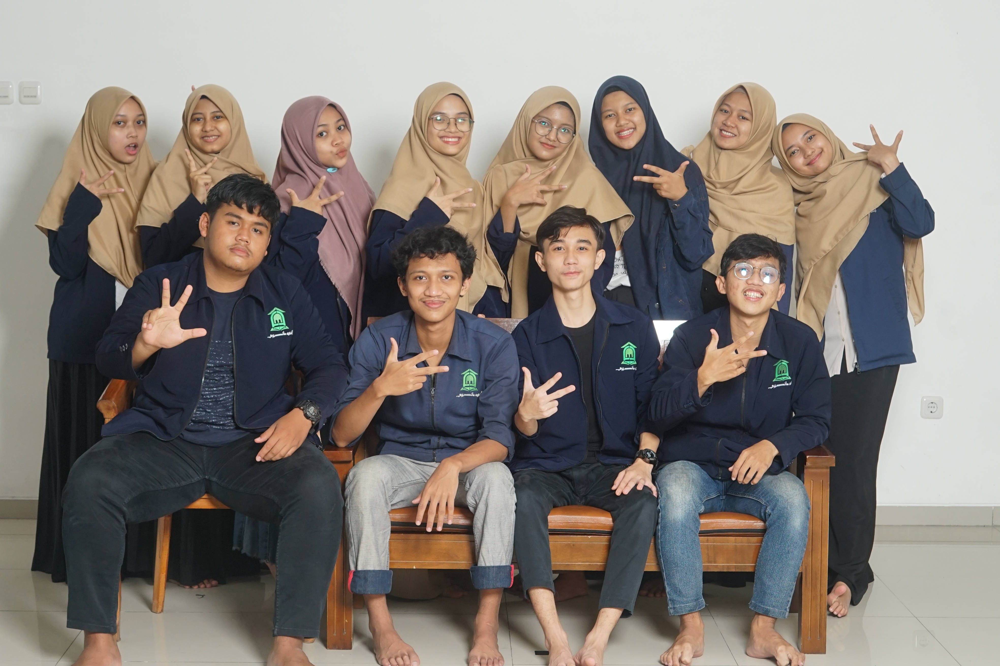Visi
Terwujudnya diisi keluara kreatif yang berkontribusi aktif dalam mewujudkan linkungan PPM AFM yang :
1. Memiliki citra yang baik dan berintegritas
2. Suportif terhadap perkembangan setiap warga PPM AFM
Misi
1. Menciptakan sistem kerja divisi yang kolaboratif dan menjadikannya wadah pengembanan diri bagi santri PPM AFM (termasuk stakeholder divisi didalamnya).
2. Turut berperan aktif didalam mempromosikan PPM AFM baik secara internal maupun eksternal
3. Berkontribusi dalam mewujudkan linkunagn PPM AFM yang nyaman, rukun, kompak, dan juga bersahaja
Kurikulum
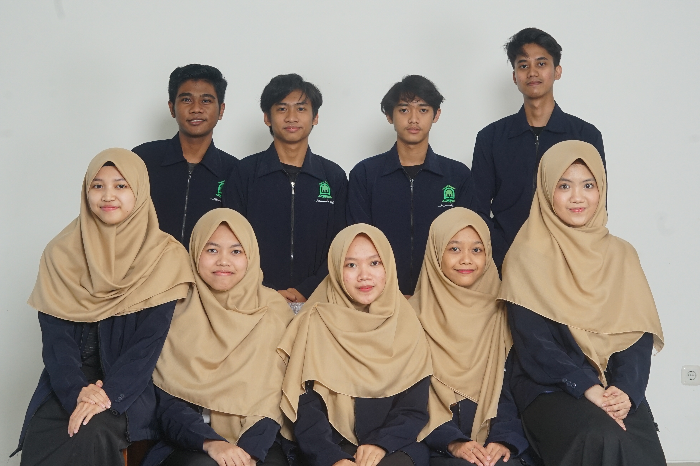Visi
Membantu para santri mencapai targetnya selama 3 tahun di PPM AFM
Misi
1. Mendistribusikan materi selama 3 tahun
2. Mendukung dan memfasilitasi kegiatan belajar mengajar di PPM AFM
Ubank
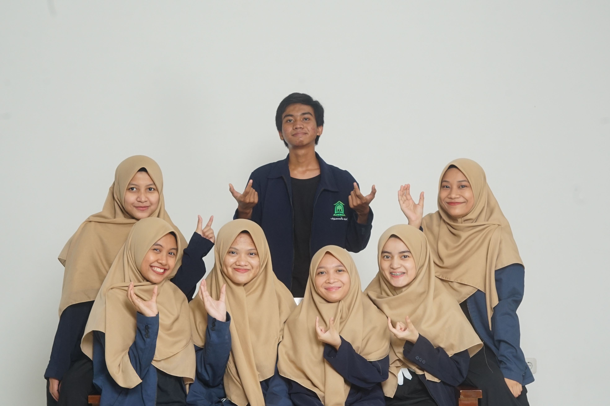Visi dan Misi
1. Memberdayakan dan menggerakan potensi mahasiswa di bidang kewirausahaan
2. Mengembangkan kegiatan usaha dan kegiatan kewirausahaan dalam rangka pembenahan ekonomi
Kesiswaan
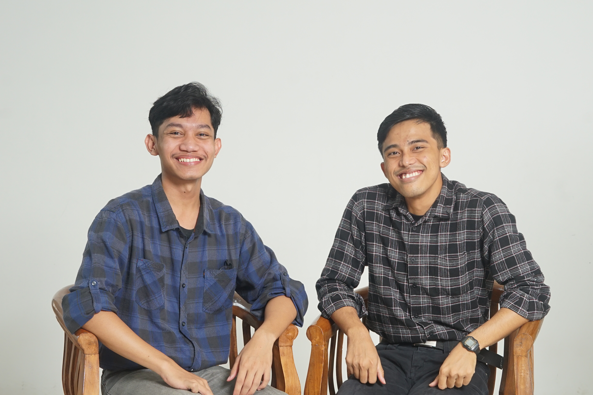Visi
Menjadi representasi santri yang ideal serta menjadi agen aktif dalam mensukseskan pembinaan professional religius di PPM AFM
Misi
1. Menjadi pemimpin yang bertanggung jawab bagi para santri PPM AFM
2. Menjadi pengawas kinerja KOAS dan Divisi PPM AFM
Keputrian
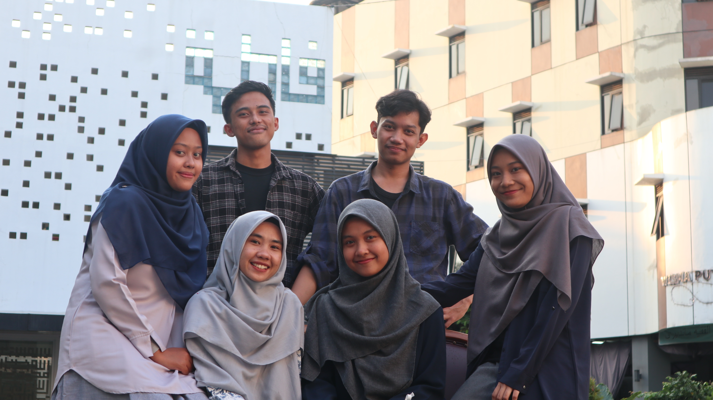Visi dan Misi
Melaksanakan kegiatan yang bertujuan untuk mengembangkan keterampilan serta menambah wawasan santriwati PPM AFM
Menjadi rekan santriwati dan berusaha membantu santriwati dalam menghadapi kesulitan
Sarana dan Prasarana
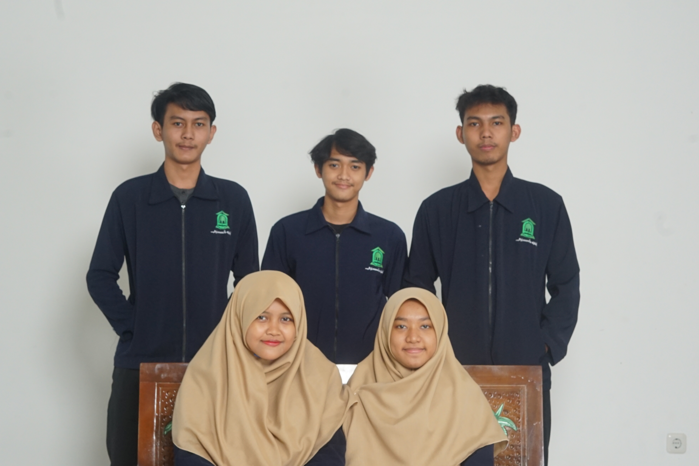Kesehatan
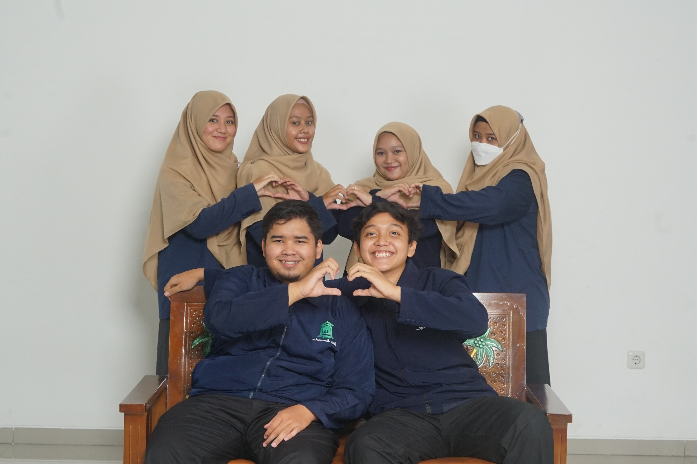Visi Misi
Rumah Tangga
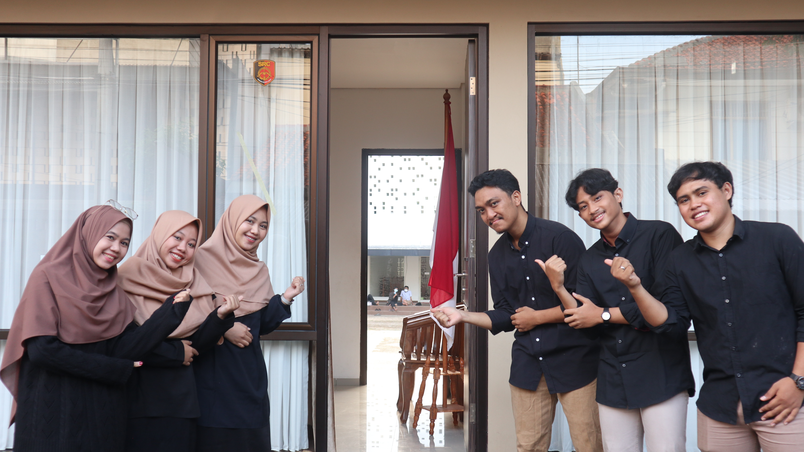Visi dan Misi
Menyediakan fasilitas untuk tamu dengan baik
Melayani tamu yang datang ke PPM AFM sebagaimana mestinya
PSDM
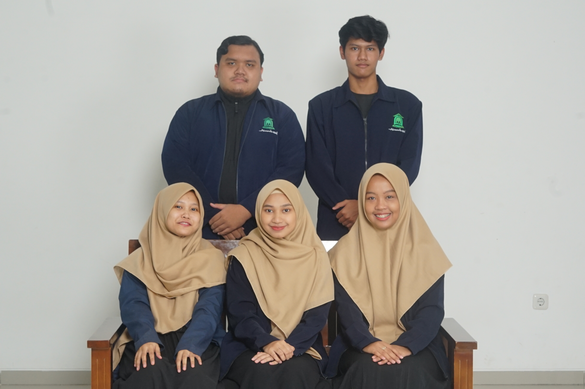Visi
PSDM (Pengembangan Sumber Daya Muslim) sebagai badan penunjang yang profesional, berkelanjutan dan juga progresif untuk generasi penerus yang madani
Misi
1. Karakter PSDM yang profesional berarti progres yang dilakukan oleh PSDM harus terlaksanakan dengan rapih, terorganisasi, dan terencana dengan baik
2. Berkesinambungan dan terus menerus berusaha mewujudkan hasil akhir yang dituju
3. Memiliki target yang akan dilakukan secara bertahap dengan adanya tujuan atau arah yang jelas berdasarkan evaluasi yang dilakukan secara berkala
Keuangan
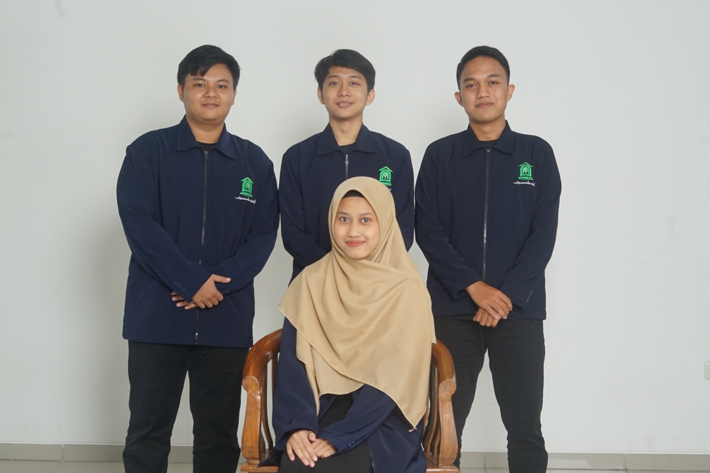Visi dan Misi
1. Menghimpun dana BOP dari tiap santri
2. Bertanggung jawab dalam mengelola, mencatat, dan membuat laporan pemasukan dan pengeluaran dana BOP
3. Bertanggung jawab dalam pembayaran seluruh operasional PPM
4. Bertanggung jawab dalam menghimpun, mencatat dan melaporkan dana isrun dari tiap santri
Sekretariat

Visi dan Misi
Mendukung program kerja dan kegiatan, melancarkan administrasi dan juga bidang kerja kesekretariatan sangat banyak, baik yang bersifat rutin dikerjakan setiap hari maupun pekerjaan yang bersifat insidental
Humas
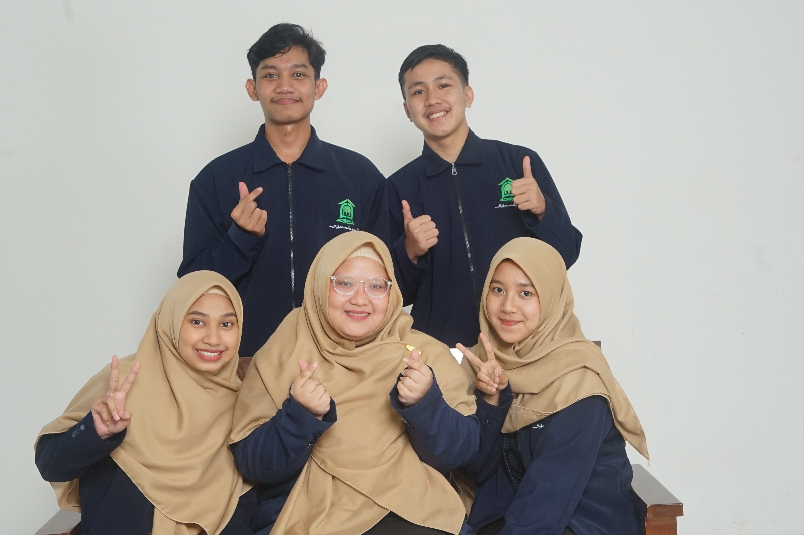Visi dan Misi
Mengatur alur informasi yang berkaitan dengan PPM AFM baik yang bersifat kedalam ataupun keluar
Fundrishing
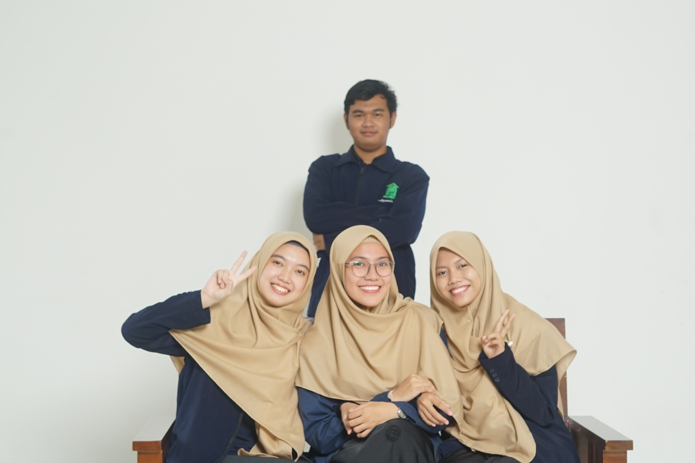Visi dan Misi
Membantu kebutuhan keuangan dan infrastruktur PPM AFM dengan dana usaha